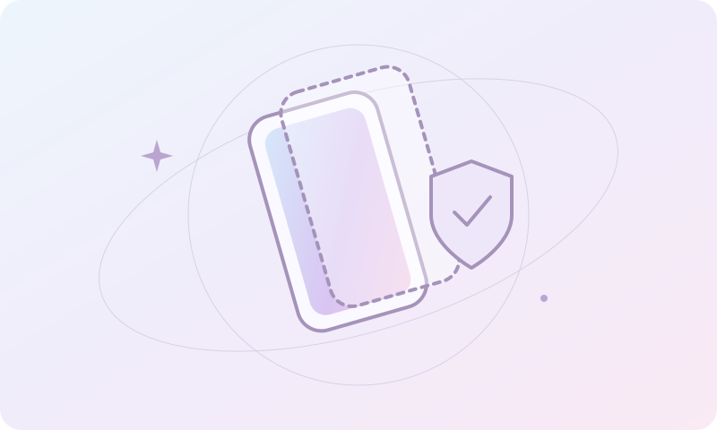

8 коротких статей о технике, которая каждый день рядом. Что проверить самостоятельно, когда обратиться к мастеру и как подготовиться к визиту.
ПЕРВАЯ ПОМОЩЬ · 3 МИН
Телефон упал в воду. Что делать сейчас?
Сначала отключите зарядку, если это безопасно. Достаньте устройство из воды, выключите его и снимите чехол. Аккуратно промокните поверхность сухой мягкой тканью.
Не подключайте зарядное устройство и не пытайтесь снова включать телефон, чтобы «проверить». Не сушите феном, не кладите на батарею и не используйте рис: тепло и частицы могут усугубить повреждения. Не вставляйте предметы в разъём.
Влагозащита со временем ослабевает, а после падений и ремонта может измениться. Даже работающий после контакта с водой телефон может иметь следы коррозии внутри.
Как можно раньше свяжитесь с мастером, укажите модель, жидкость и примерное время происшествия. Диагностика поможет понять, что можно восстановить. Заранее обещать сохранность данных или итоговую стоимость без осмотра нельзя.
Причина не всегда в батарее. Проверьте расход энергии в настройках: навигация, яркий экран, слабая связь и фоновые приложения могут заметно сокращать время работы. После обновления системы временно растёт нагрузка на фоновые процессы.
Литийионные аккумуляторы постепенно изнашиваются. Падение ёмкости, внезапные выключения и сильное изменение автономности — повод для проверки. Показатель состояния батареи полезен, но сам по себе не заменяет диагностику.
Избегайте перегрева, используйте совместимые качественные зарядные устройства и при наличии включайте оптимизированную зарядку. Если корпус вздулся, экран начал отходить или появился необычный запах, прекратите использование и зарядку. Не давите на корпус и не пытайтесь проколоть батарею; обратитесь в сервис.
Мастер уточнит модель, проверит состояние и согласует замену, если она действительно нужна.
ВЫБОР ЗАЩИТЫ · 2 МИН
Стекло или гидрогелевая плёнка?

Стекло помогает защитить поверхность от царапин и может принять часть удара. Оно ощущается ближе к самому экрану, но добавляет толщину и подходит не ко всем изгибам одинаково хорошо.
Гидрогелевая плёнка тоньше и гибче, часто подходит для изогнутых дисплеев. Она прежде всего защищает от повседневных потёртостей и небольших царапин. Надёжность при сильном падении обещать нельзя — ни для плёнки, ни для стекла.
«Антишпион» ограничивает видимость экрана сбоку. Это удобно в транспорте, но может снижать яркость и менять восприятие изображения. Важно проверить совместимость с подэкранным сканером отпечатка и чехлом.
В мастерской: стёкла для Android от 600 ₽, обычные стёкла от 1 200 ₽, «Антишпион» от 1 300 ₽, гидрогелевая плёнка от 1 000 ₽. Наличие и цену для вашей модели уточняйте заранее.
Если устройство работает, сделайте резервную копию важных данных и убедитесь, что знаете пароль своей учётной записи. Сохраните доступ к двухфакторной аутентификации на другом устройстве, если это возможно.
Запишите симптомы: когда появилась проблема, после чего, повторяется ли она при зарядке или работе определённого приложения. Сообщите о предыдущих ремонтах и контакте с жидкостью.
Не отправляйте мастеру пароли и коды подтверждения в переписке. Необходимость доступа к устройству и способы проверки после ремонта обсудите лично. Перед передачей согласуйте диагностику, стоимость и условия работ.
ПРОСТАЯ ДИАГНОСТИКА · 3 МИН
Телефон не заряжается. С чего начать?
Сначала исключите простое: проверьте розетку, адаптер и кабель. Если есть совместимый исправный комплект, попробуйте его. Повреждённый, сильно нагревающийся или пахнущий гарью аксессуар использовать нельзя.
Осмотрите разъём при хорошем освещении. Не чистите его иглой, металлическими предметами и жидкостями. Если внутри заметен мусор или контакты выглядят повреждёнными, безопаснее показать устройство мастеру.
Если телефон долго лежал разряженным, экран может загореться не сразу. Подключите исправную зарядку и подождите согласно инструкции производителя. При нагреве, вздутии корпуса или контакте с водой зарядку прекратите.
Устройство заряжается только под определённым углом? Не расшатывайте штекер: проблема может быть в кабеле или разъёме. Сообщите мастеру модель, используемый адаптер и поведение устройства — так проще начать диагностику.
Замедление не всегда означает поломку. Проверьте, хватает ли свободного места на системном диске, не выполняется ли обновление и какие программы запускаются вместе с системой. В Windows поможет Диспетчер задач, в macOS — Мониторинг системы.
Закройте лишние приложения и перезагрузите ноутбук, предварительно сохранив работу. Не удаляйте системные папки и не используйте случайные «ускорители» из рекламы: они могут навредить данным и настройкам.
Если вентилятор постоянно шумит, корпус сильно нагревается или ноутбук выключается под нагрузкой, возможны проблемы с охлаждением. Используйте твёрдую поверхность, не закрывайте вентиляционные отверстия. Разбирать корпус без опыта не стоит.
Перед диагностикой сохраните важные файлы. Мастер проверит причины и обсудит варианты: настройка, обслуживание или ремонт. Переустановка системы нужна не всегда; данные и условия её проведения согласуйте заранее.
Если стекло раскрошилось, не проводите по нему пальцами и не давайте устройство детям. Избегайте давления на экран. Если корпус деформирован, появился запах или сильный нагрев, прекратите использование и зарядку.
Даже когда изображение и сенсор работают, повреждение может ухудшиться от следующего удара или попадания влаги. Если устройство безопасно использовать, сделайте резервную копию нужных данных.
Не наносите клей и не пытайтесь самостоятельно отделить стекло. В современных устройствах стекло, сенсор и дисплей могут быть частью единого модуля. Подходящий способ ремонта определяется после осмотра конкретной модели.
Перед заменой обсудите тип детали, совместимость, работу функций устройства и условия гарантии. Стоимость зависит от модели и выбранного решения — универсальную цену без этих деталей назвать нельзя.
ПОЛЕЗНОЕ РЯДОМ · 2 МИН
Как подготовить документ к печати А4
По возможности сохраните документ в PDF. Так шрифты, поля и расположение элементов с меньшей вероятностью изменятся при открытии на другом устройстве. Перед сохранением проверьте формат бумаги: А4 — 210 × 297 мм.
Просмотрите каждую страницу: нет ли обрезанного текста, пустых листов, слишком мелких подписей или неверной ориентации. Для анкет и форм уточните, нужен ли исходный масштаб 100% или допустимо вписать документ в страницу.
Заранее сообщите количество страниц и копий, цветность и другие пожелания. Если нужно распечатать только часть файла, укажите номера страниц. Цветная печать рассчитывается отдельно.
В Device Workshop чёрно-белая печать и копирование А4 — от 25 ₽ за 1 шт. Способ передачи файлов, актуальную цену и возможность выполнения заказа уточните у мастера. Конфиденциальные документы не отправляйте без предварительного согласования.